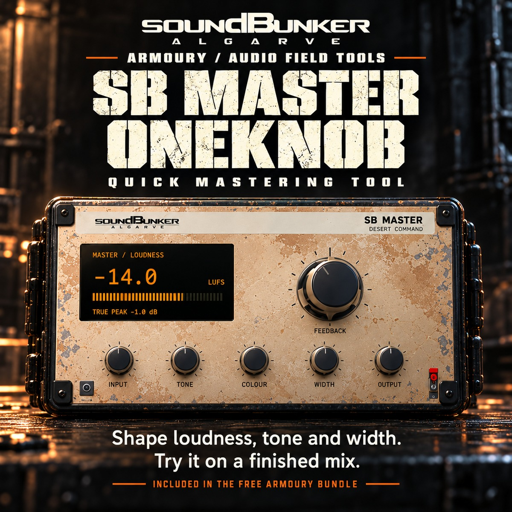
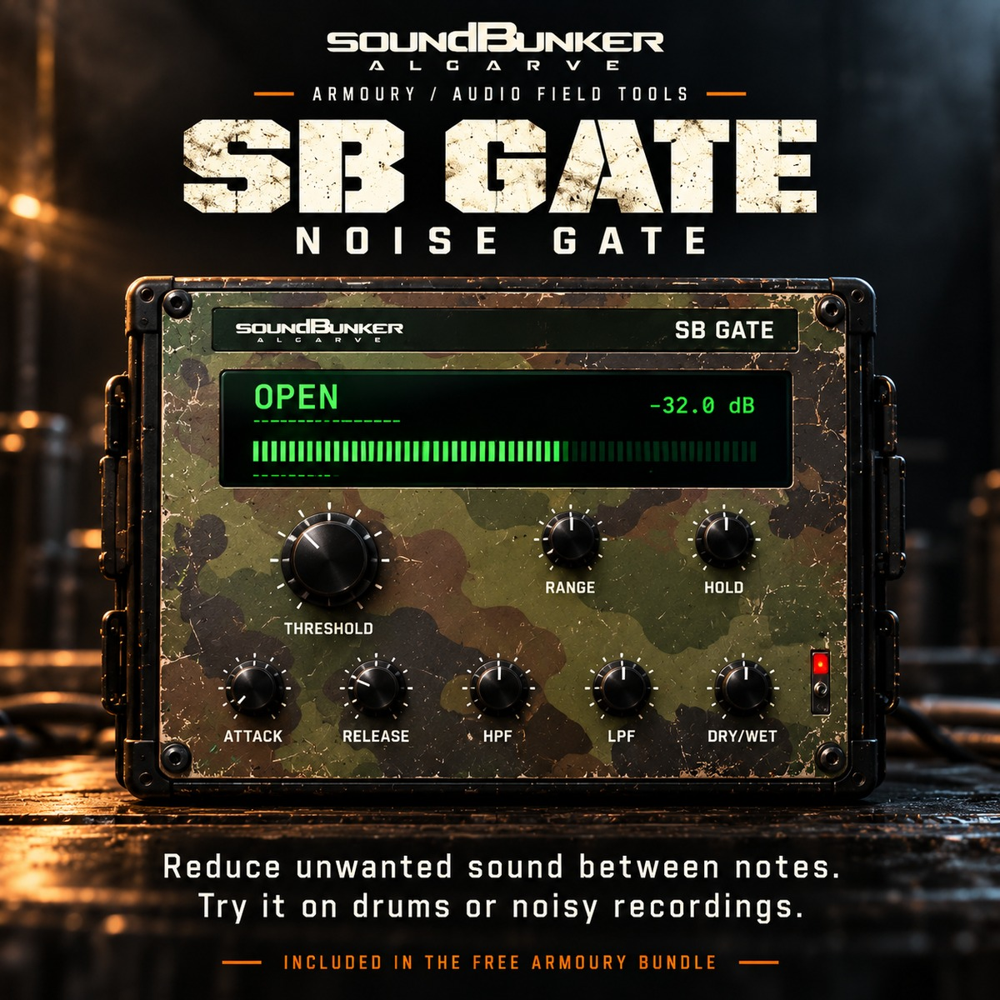
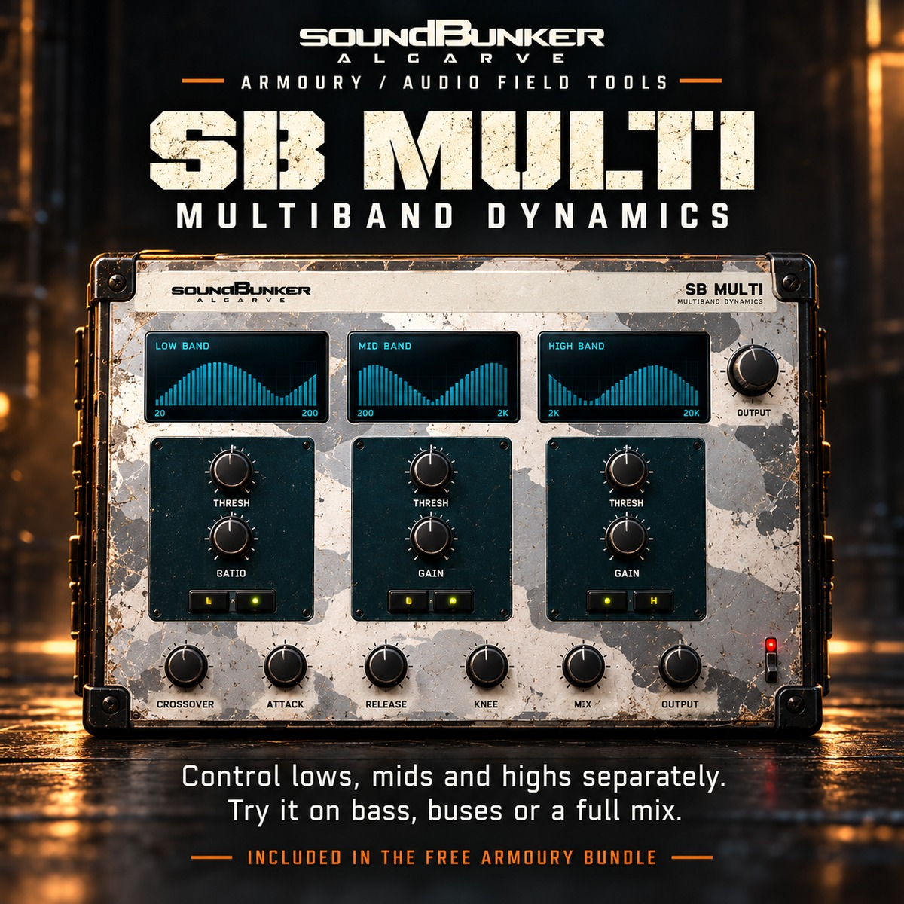
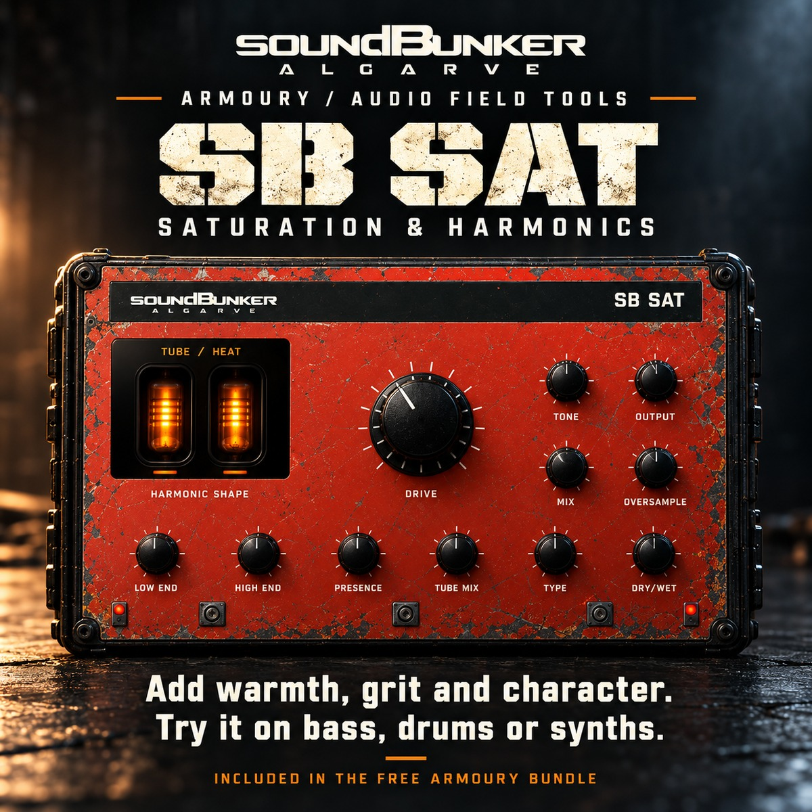
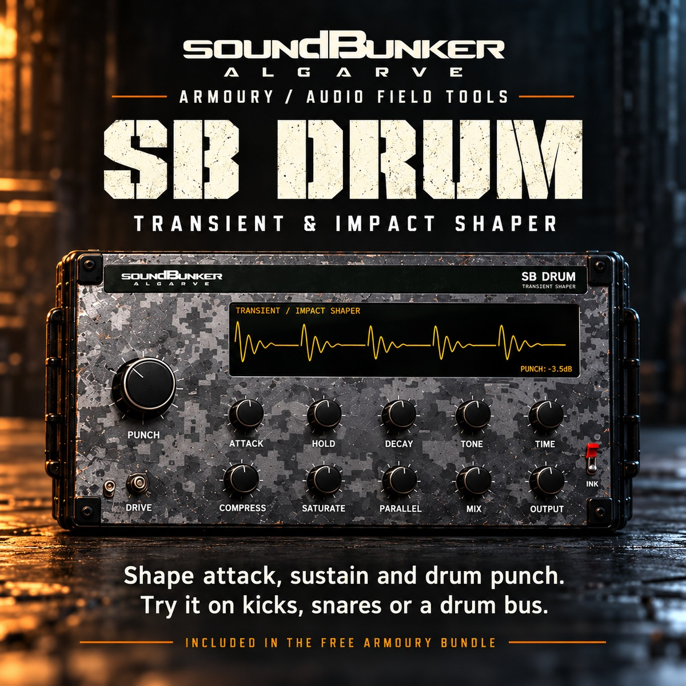
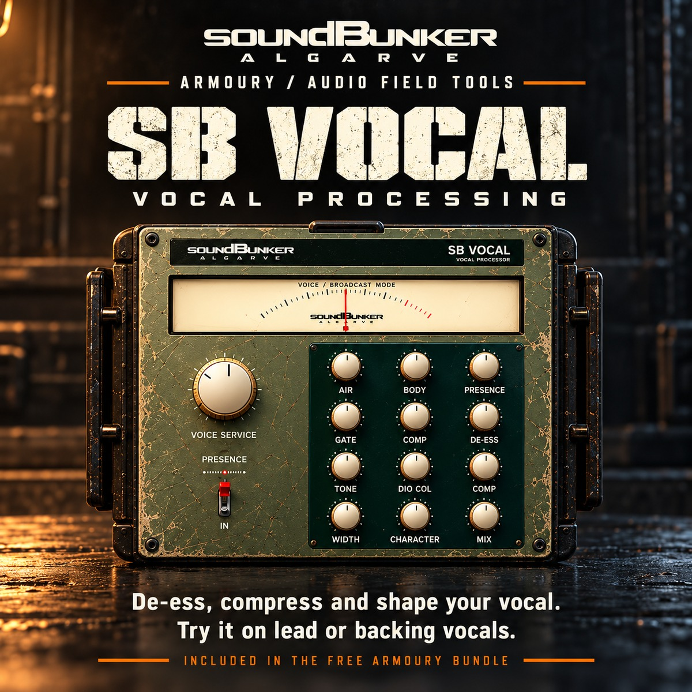
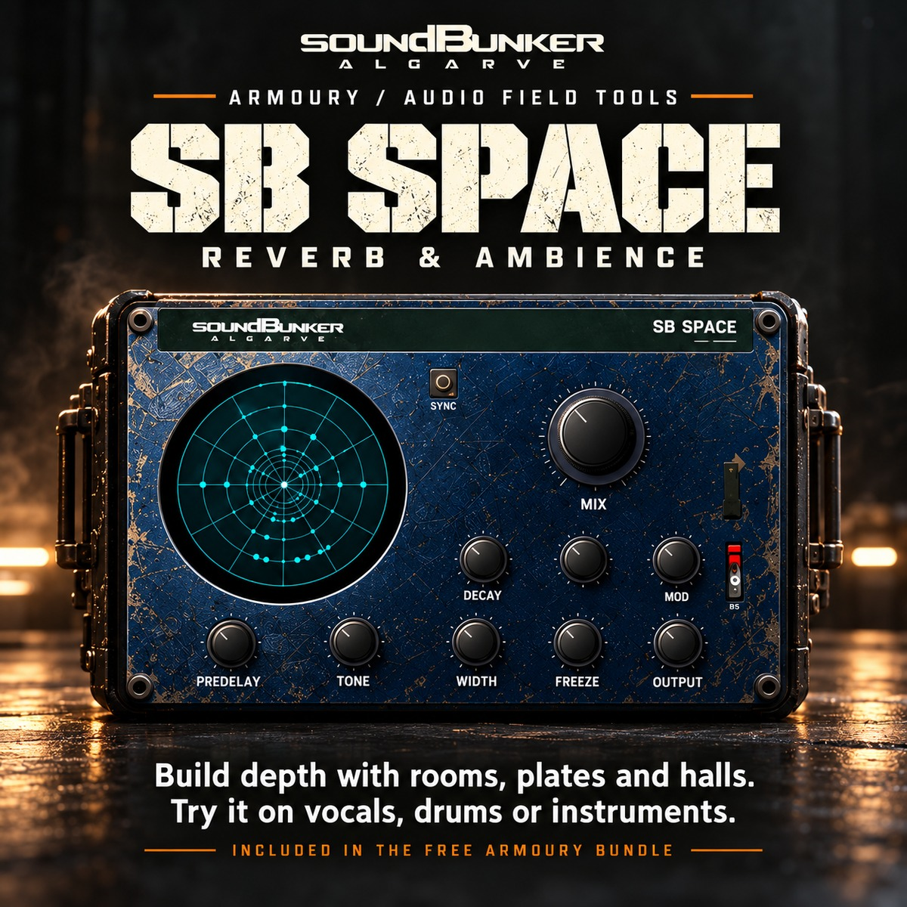

SoundBunker / Audio Field Tools
Your sound. Fully armed.
Synths, drums, saturation, mastering and a full mix toolkit, made and used at SoundBunker in Loulé. AU, VST3 and standalone for macOS, VST3 and standalone for Windows.
The 11-effect Armoury is always free. Every other plug-in is €25, any 3 for €45, or all of them for €59, and every order comes with the Armoury free. Try any of them free for 14 days; one licence covers 2 computers, Mac and Windows mixed.
Producers
Got a producer code?
Enter it with your e-mail and we will send your own licence key and the download links.
Included in the free Armoury bundle
11 free effects. For beginners and pros alike.
Shape tone, control dynamics, add character and build space. Every one of these comes free with the Armoury.
PARAMETRIC EQUALISER
SB EQ
Shape tone and balance your mix. Shape the tone of a sound by adjusting different frequency ranges. Cut unwanted rumble, reduce boxiness or add brightness where a part needs it.
When to use it: Use on individual tracks or buses to help each part find its place in the mix.
Quick tip: Start by listening for a problem, then make a small cut or boost and compare with bypass.
DYNAMICS & COMPRESSION
SB COMP
Control peaks. Add punch and glue. Control changes in level and shape how a sound hits. Use compression to tame peaks, bring out detail or help a group of tracks feel more connected.
When to use it: Use on vocals, bass, drums and buses when the level or impact needs more control.
Quick tip: Compare at a similar listening level so extra volume does not hide what the compressor is doing.

QUICK MASTERING TOOL
SB MASTER ONEKNOB
Shape loudness, tone and width. A simplified way to give a mix a finishing touch, with controls for loudness, tone and stereo width. Work towards a more balanced presentation without a complicated chain.
When to use it: Use on the master bus when you want a quick finishing pass.
Quick tip: Make small changes and check the result against the unprocessed mix at a similar volume.

NOISE GATE
SB GATE
Reduce unwanted sound between notes. Reduce the level of a track when its signal falls below your chosen threshold. Clean up gaps between hits or phrases while keeping the sound you want.
When to use it: Use on drum recordings, noisy takes or parts with unwanted sound in the gaps.
Quick tip: Set the threshold carefully and adjust the timing so quiet notes and natural decays are preserved.

MULTIBAND DYNAMICS
SB MULTI
Control lows, mids and highs separately. Control different frequency areas independently. Work on low-end movement, midrange intensity or high-frequency peaks without applying the same treatment to the whole signal.
When to use it: Use on bass, busy buses or a full mix that needs more focused dynamics control.
Quick tip: Begin with one frequency area and make a small adjustment before working on the other bands.

SATURATION & HARMONICS
SB SAT
Add warmth, grit and character. Add harmonic colour, from subtle warmth to a more driven texture. Use it to give clean sounds extra character or help a part feel more present.
When to use it: Use on bass, synths, drums, vocals or a bus when a sound needs more colour.
Quick tip: Start with a little drive, then balance the processed sound with the mix control.

TRANSIENT & IMPACT SHAPER
SB DRUM
Shape attack, sustain and drum punch. Shape the impact and body of drum sounds. Bring out the initial hit, control the tail or adjust the character of a drum part.
When to use it: Use on individual drum hits, loops or a drum bus that needs a different feel.
Quick tip: Listen to the drums in the full mix and keep enough natural movement for the groove.

VOCAL PROCESSING
SB VOCAL
De-ess, compress and shape your vocal. Bring useful vocal-shaping controls together in one tool. Manage harsh sibilance, control dynamics and adjust the tone so a vocal sits more comfortably in the track.
When to use it: Use on lead vocals, backing vocals or spoken-word recordings.
Quick tip: Work with the backing track playing and keep de-essing gentle enough to preserve clear pronunciation.
CHANNEL STRIP
SB STRIP
EQ, gate, compression and drive in one. Combine several everyday mixing jobs in one channel strip. Shape tone, control unwanted sound, manage dynamics and add drive from a single interface.
When to use it: Use on individual tracks when you want a straightforward starting point for mixing.
Quick tip: Bring in one section at a time so you can hear what each stage adds.
STEREO & TAPE-STYLE DELAY
SB ECHO
Add rhythmic repeats and tape-style echoes. Create repeating echoes that add rhythm, movement and space. Use a short delay for extra thickness or a longer repeat as a creative part of the arrangement.
When to use it: Use on vocals, guitars, synths or transitions that need movement.
Quick tip: Start with a low mix level and leave space between repeats so they support the original sound.

REVERB & AMBIENCE
SB SPACE
Build depth with rooms, plates and halls. Place sounds in a sense of space, from a close room to a larger reverb tail. Add depth and atmosphere or help separate sounds from the front of the mix.
When to use it: Use on vocals, instruments, drums or a send bus to create depth.
Quick tip: Keep the effect in context and use less than you think if the mix starts to feel distant.
How it works
- Get the free Armoury, or download and try. Enter your e-mail for the free Armoury key. Install any other plug-in and press START 14-DAY TRIAL. After the trial it keeps working in demo mode, with a short silence every 45 seconds.
- Buy a licence. Pay securely by card, Apple Pay or Google Pay. Your licence key arrives by e-mail straight away and is saved in your Client Area.
- Activate. Paste the key into the plug-in and press ACTIVATE. It needs the internet once; after that it works offline.
- Change computers any time. Press DEACTIVATE THIS COMPUTER in the plug-in, or remove an old computer in your Client Area, then activate on the new one.
Questions
What do I need?
macOS 12 or later (Apple silicon or Intel), or Windows 10/11 64-bit, and a DAW that loads AU or VST3 plug-ins (Logic, Cubase, Ableton Live, FL Studio, Studio One, Reaper and others). Every plug-in also runs on its own as a standalone app.
Does it need the internet?
Only to activate. The plug-in quietly re-checks its licence about once a month when it can; if your studio is offline it keeps working for 60 more days before asking you to connect.
Activation does not work inside GarageBand.
GarageBand keeps plug-ins away from the internet. Open the standalone app from Applications, activate there, and the plug-in in GarageBand is licensed too.
Can I get a refund?
Try the plug-in free for 14 days before buying. If something is wrong with a purchase, write to bookings@soundbunker.pt and we will sort it out.